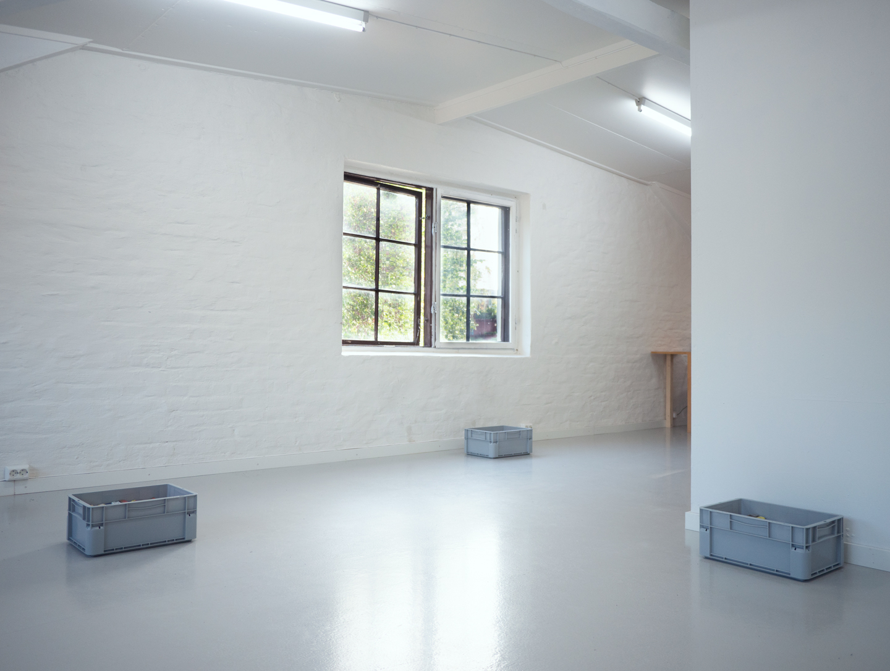
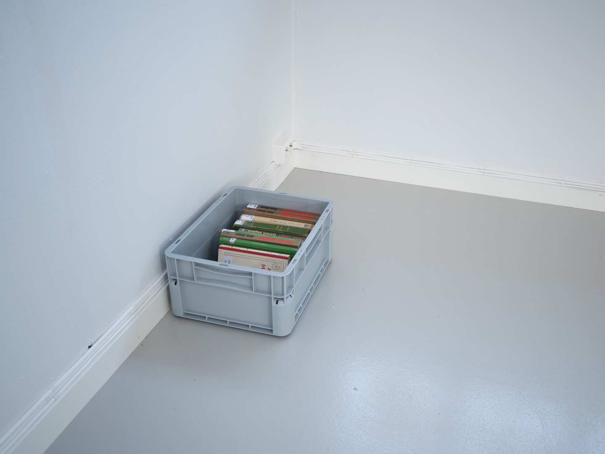
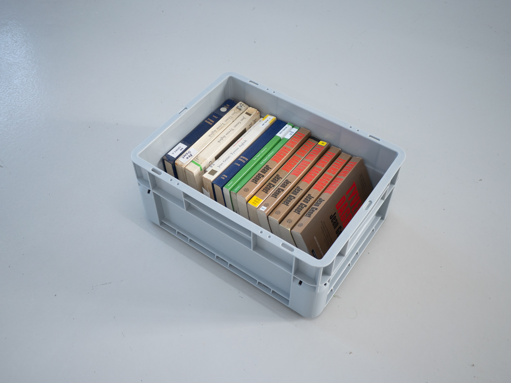
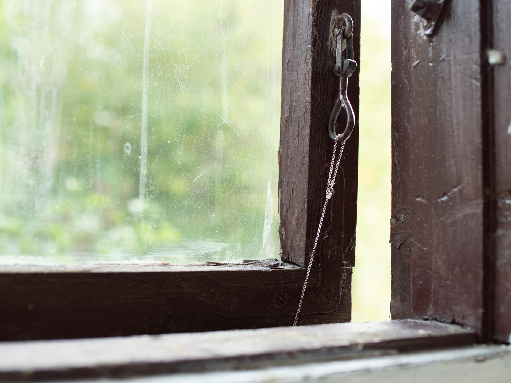
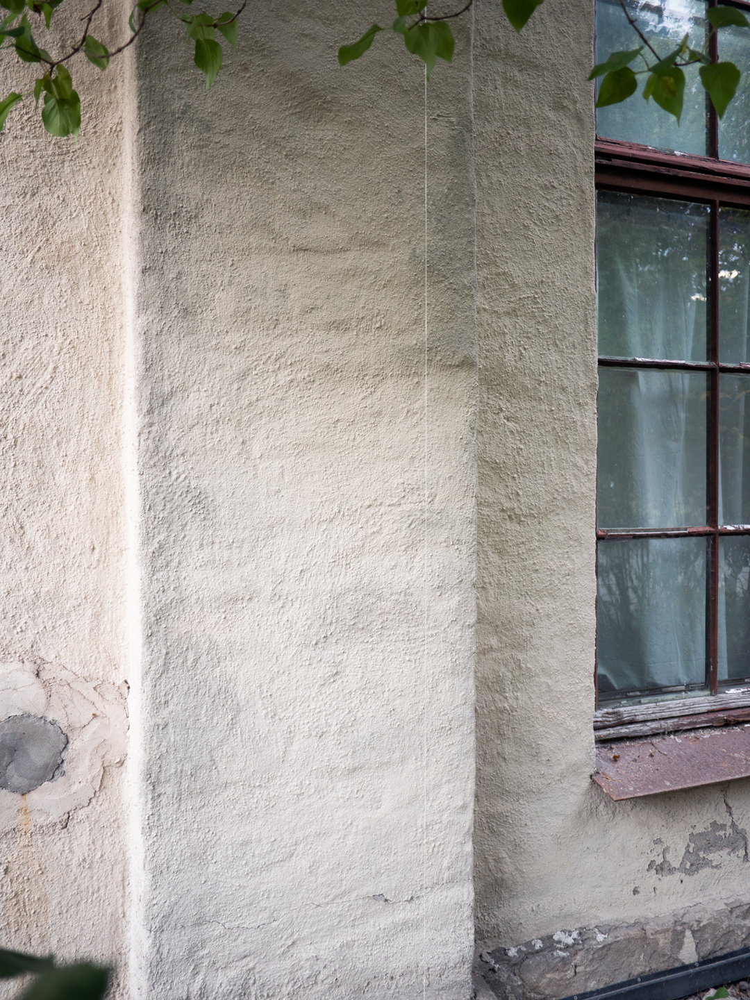
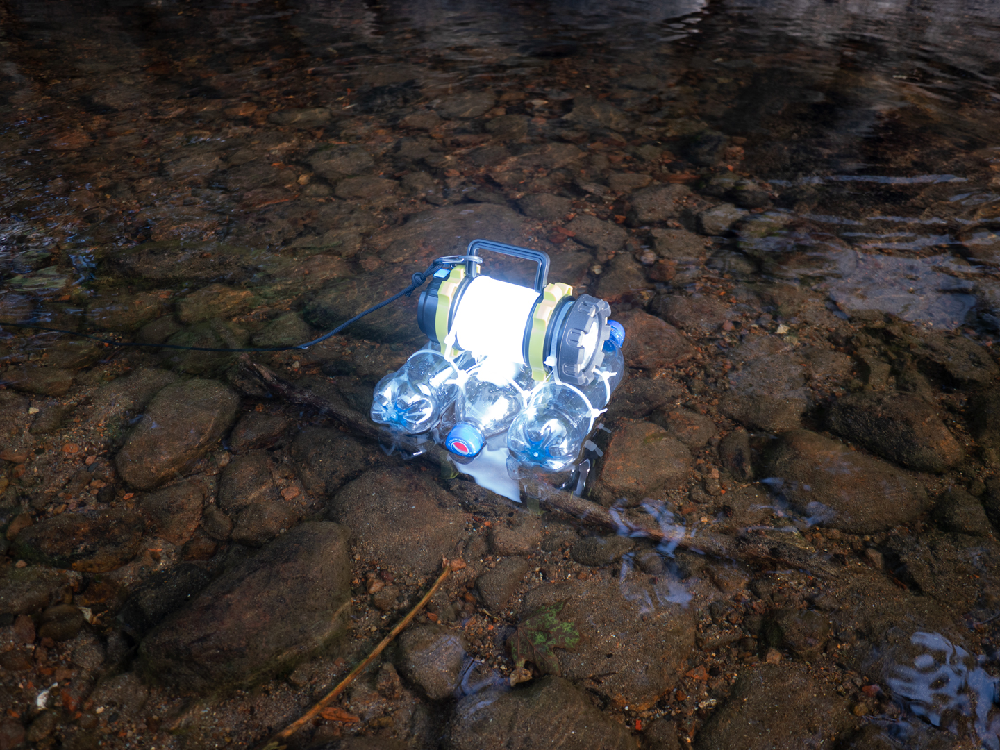

Personal Values
Miriam Myrstad
09.09. - 03.10.2021
I’d been hung up on dreaming for a long time and was looking for a way to get off. The way off meant through a dream. Not just any, lesser one. I wanted a dream by Magritte. Through a social platform called Spiritual Networks I made contact with R, a man living in Maine. R claimed to have psychometric gifts, meaning that touching certain objects could give him a vision or download or message from its deceased owner. I asked him if he would go to SFMOMA and touch a painting for me. He said San Francisco was a long way from Rangeley, Maine. I asked again. He said he would try.
Miriam Myrstad (b. 1989, Oslo) is an artist, poet and library worker.
Photo: Kim Laybourn
     